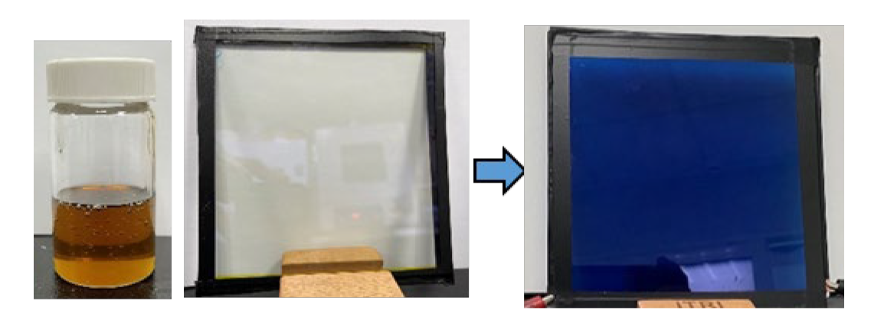

| 新型電致變色技術 Novel Electrochromic technology |
| 本計畫投入膠態電致變色材料的開發，藉由分子結構設計 使膠態電致變色材料系統具有優異抗水氧能力，並結合回 用 TFT 基板架構而成塗佈型電致變色元件技術，具備低 電壓即可驅動變色、可常溫塗佈優越性，可應用於智慧窗 /變色遮光鏡目組/車用遮光、抗眩設施。 This project develops a new Gel type electrochromic material technology. The gel electrochromic material system has moisture resistance through molecular structure design, and combined with the TFT substrate structure to make EC devices. The gel type EC devices has the advantages of low voltage driving for color change and room temperature coating process. Electrochromic products such as display, smart-window, and anti-glare rearviewmirror  |
| 技術洽詢聯絡人：李政穎 聯絡電話：03-591-4958 手機:0912513041 E-mail：JYLI@itri.org.tw |